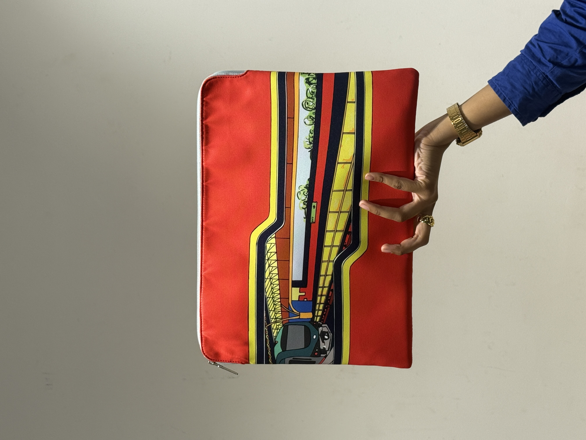
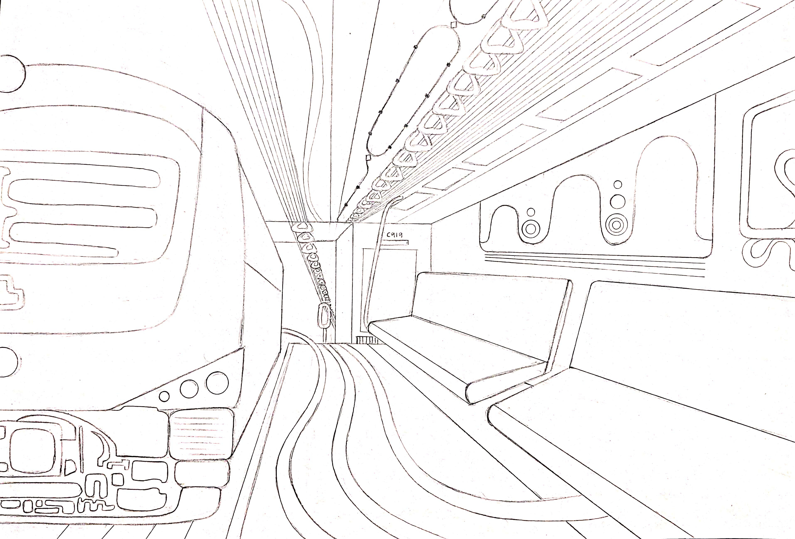
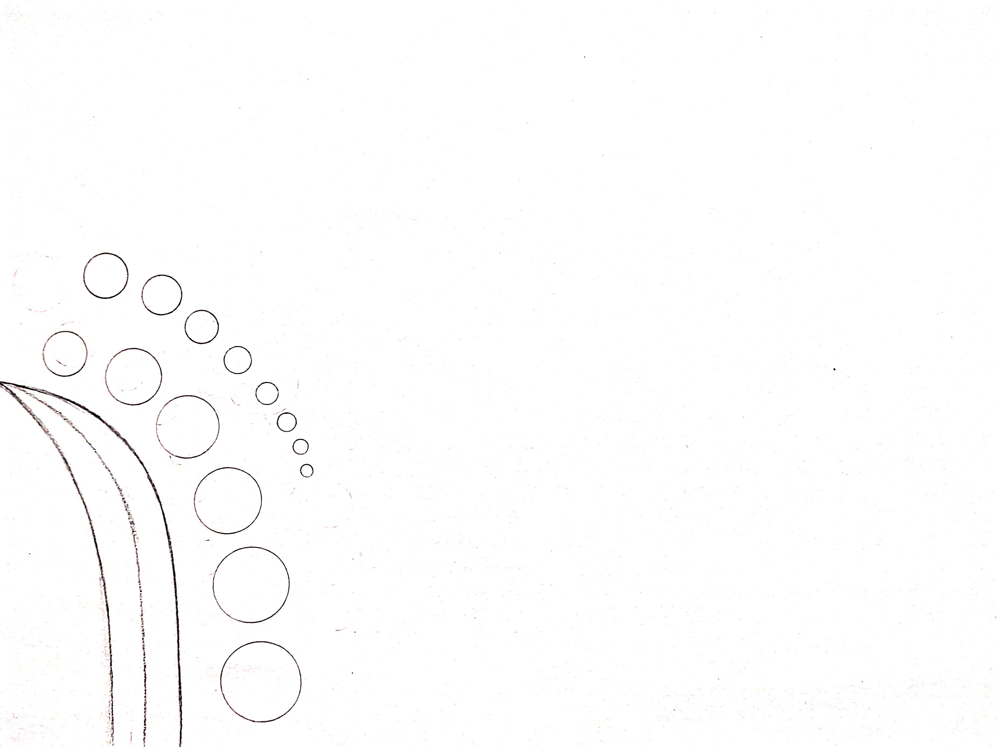
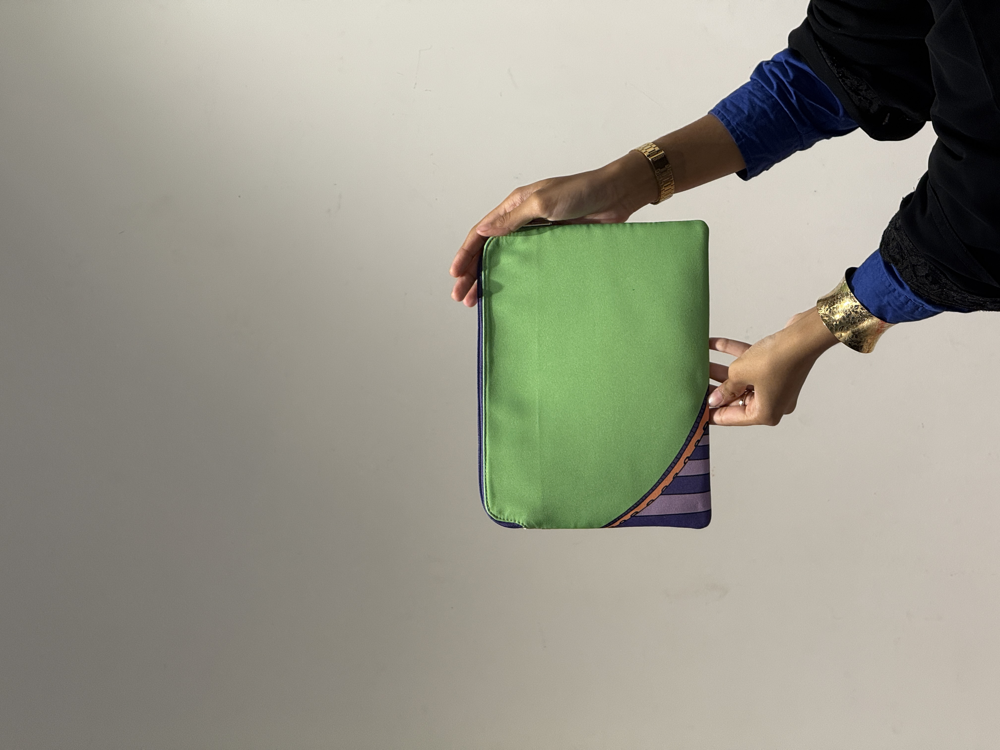

A visual design exhibition / 2026
Chennai · India
OFF
THE
TRACK.
DESIGN
IN
MOTION ✳
IN
MOTION ✳
What happens when the everyday movement of a city becomes the starting point for design? A journey from metro tracks to wearable design.
SCROLLTO EXPLORE ↓
A design journey in motion
01 — 06 / EXPLORE

URBAN LIVING ✳ DESIGN IN MOTION ✳ CITY TO CANVAS ✳ OFF THE TRACK ✳
URBAN LIVING ✳ DESIGN IN MOTION ✳ CITY TO CANVAS ✳ OFF THE TRACK ✳
THE CITY
WAS THE
STARTING POINT.
The metro is more than a mode of transport. It is an aid to urban living — connecting places, people and everyday routines. But somewhere between the stations, moving trains and railway tracks, I found a different kind of inspiration. This project takes that everyday urban experience and transforms it into a series of laptop bags and tablet bags.
The route / Contents
TAKE A LOOK
PICK YOURTAKE A LOOK
AROUND.
PLATFORM ↗

01 / The idea↗

02 / Sketchbook↗

03 / Collection↗